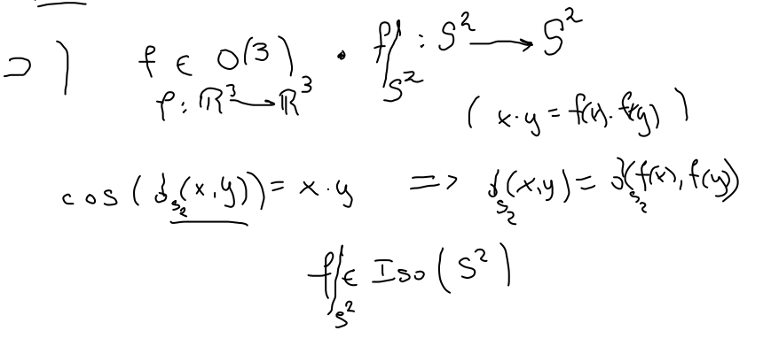
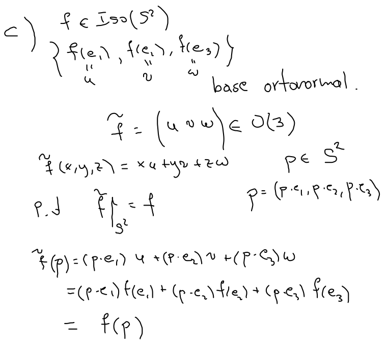
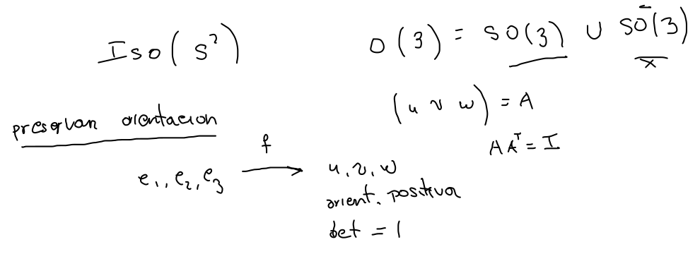
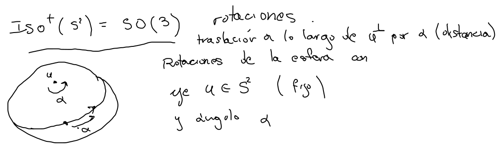
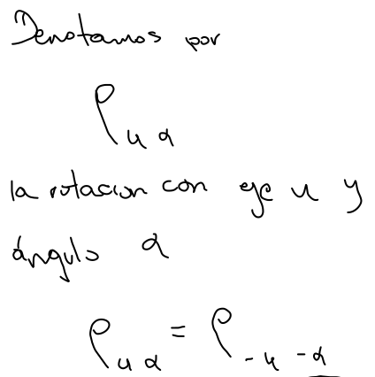
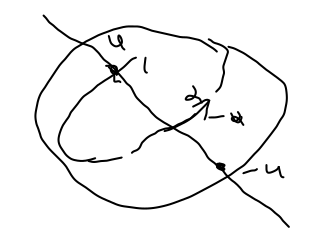
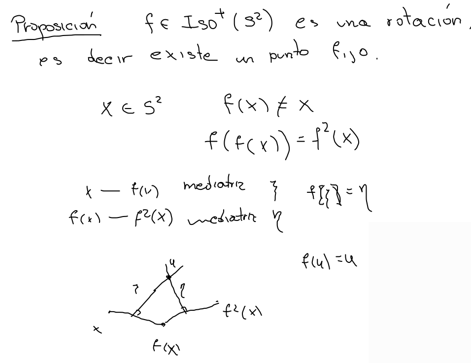
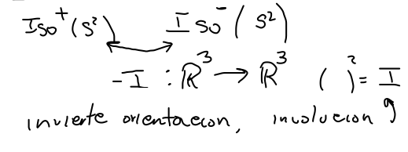
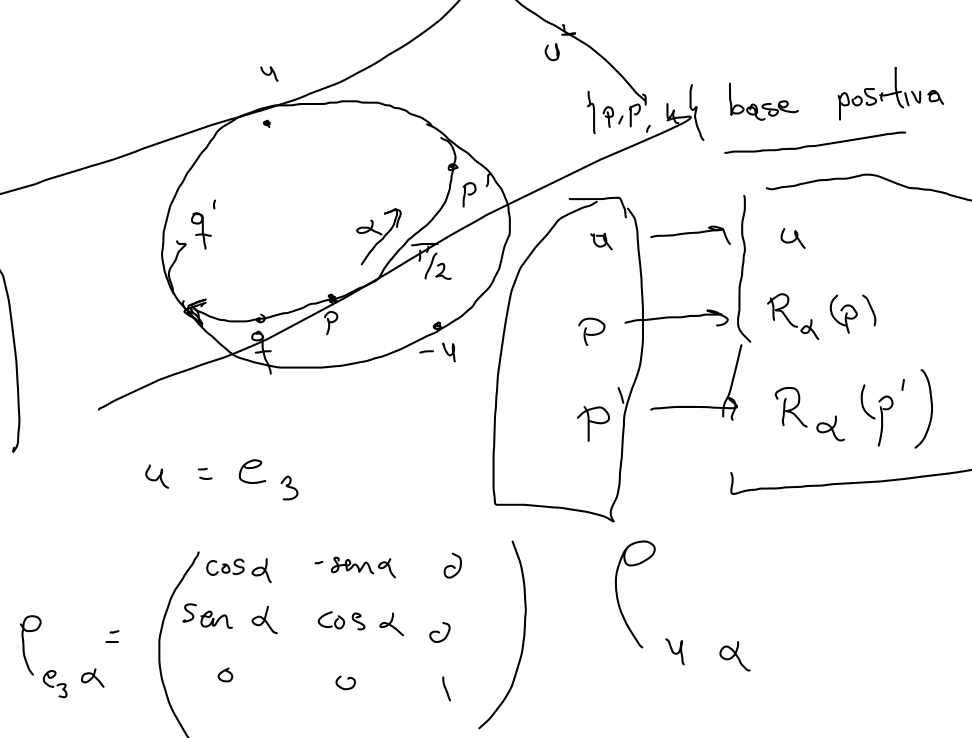

Proposición Iso(S2)=O(3)\text{Iso}(\mathbb S^2)=\mathbf{O}(3)Iso(S2)=O(3) 



 
Teorema del Gol
Las isometrías de S2\mathbb S^2S2 son rotaciones ρu α\rho_{\mathbf u\,\alpha}ρuα, es decir tienen un punto fijo.

 